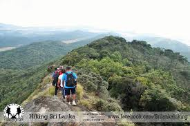
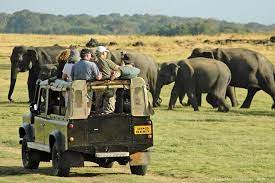

ABOUT
You may be looking for ways to make your time in Sri Lanka memorable while on vacation. Here are some things to do in this beautiful nation.
HIKING
"The pilgrimage season, which begins on the poya (full moon) day in December and lasts until the Vesak festival in May, is when most people take on the challenging walk. Pilgrims begin trekking at 2 a.m. to reach the peak before sunrise, but you may start climbing from Dalhousie shortly after nightfall to avoid the crowds.
On poya days, the throngs make progress at a snail's pace ".. Worlds End Tour from Horton Plains
The trip to Nuwaraeliya takes 4 to 6 hours and costs $40.00.
SURFING

It has only been a few years since surfing entered the picture of this magnificent island and exploded in popularity, establishing Sri Lanka as a well-known tropical surf destination. Weligama, the site of our surf camp The Sufer Sri Lanka, was once just another peaceful beach hamlet, but it is now a popular tourist destination.
It is well-known as one of Sri Lanka's greatest beginning surf spots.
The cost of surfing at Weligama was quite high.
ranging from $7 to $23 per hour Furthermore, the nicest section of the nation is visited throughout the months of May to October.
SAFARI
 "Sri Lanka, a tear-shaped island in the Indian Ocean, has some of the world's highest rates of biological endemism, with 16 percent of its fauna and 23 percent of its flora being unique to the nation. It boasts almost 400 kinds of birds and its own 'big five': elephants, leopards, sloth bears, blue whales, and tigers.
as well as sperm whales It's also one of the few spots in the world where visitors may combine ehale watching with a land safari.For example, a safari excursion to Udawalawe National Park from Galle/ Mirissa/Ella costs $138.67, while a full-day private tour to Sigiriya and Dambulla from Kandy costs $60.00.
heritage1
heritage2